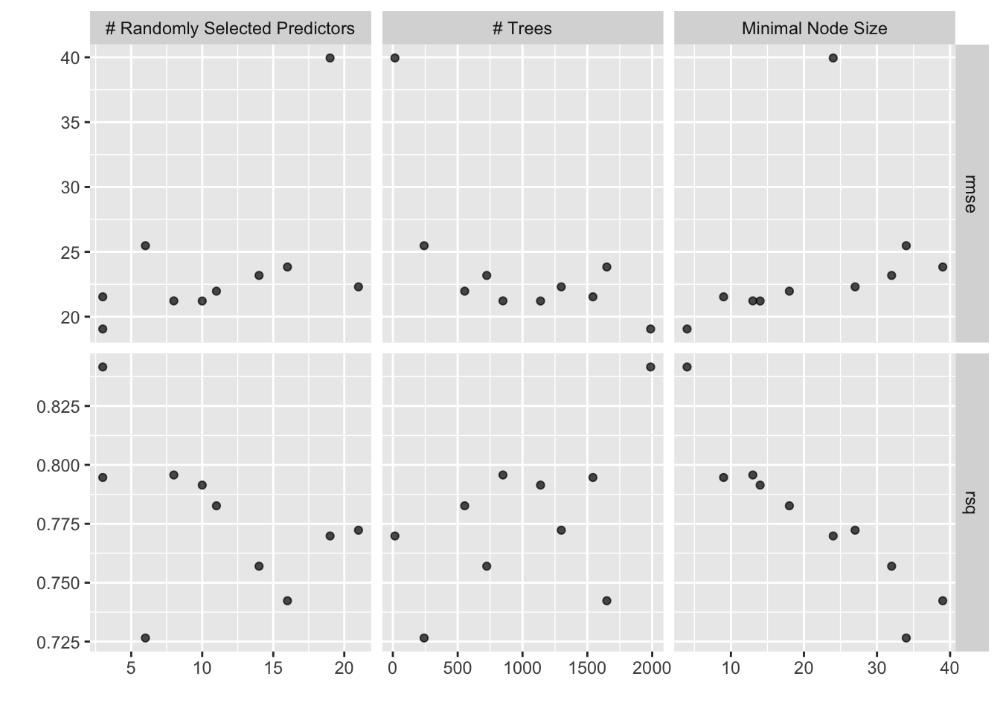

# install.packages("pak")
# pak::pak("tidymodels", "embed", "vetiver", "pins", "paws.storage")
library(tidymodels)
library(embed)
library(vetiver)
library(pins)
library(paws.storage)Vetiver, S3, and Docker
csv
vetiver
Docker
Amazon S3
Using vetiver to version a model in a S3 bucket, and predict with it from a Docker container
Changes from standard
All changes from the standard pipeline is highlighted with a cranberry line to the right.
Loading packages
We are using the tidymodels package to do the modeling, embed for target encoding, pins for versioning, vetiver for version and deployment, and paws.storage for S3 connections.
Loading Data
We are using the standard laxflights2022 data set described on the data preparation page.
flights <- readr::read_csv(here::here("data/laxflights2022.csv"))
glimpse(flights)Rows: 187,868
Columns: 8
$ arr_delay <dbl> -12, 28, 46, -38, 74, 69, -20, -7, 10, 16, 109, -12, 122, -1…
$ dep_delay <dbl> 8, 31, 60, -7, 86, 79, 9, 10, 24, 32, 115, 9, 172, -2, 16, -…
$ carrier <chr> "UA", "AA", "NK", "AA", "NK", "NK", "UA", "NK", "DL", "NK", …
$ tailnum <chr> "N57864", "N919NN", "N949NK", "N812AA", "N903NK", "N509NK", …
$ origin <chr> "LAX", "LAX", "LAX", "LAX", "LAX", "LAX", "LAX", "LAX", "LAX…
$ dest <chr> "IAH", "BNA", "CLE", "PHL", "PIT", "DTW", "ORD", "IAH", "MSP…
$ distance <dbl> 1379, 1797, 2052, 2402, 2136, 1979, 1744, 1379, 1535, 1235, …
$ time <dttm> 2022-01-01 23:59:00, 2022-01-01 23:43:00, 2022-01-01 23:15:…downsampling for speed for now.
flights <- slice_sample(flights, prop = 0.02) %>%
arrange(time)Modeling
As a reminder, the modeling task we are trying to accomplish is the following:
Given all the information we have, from the moment the plane leaves for departure. Can we predict the arrival delay
arr_delay.
Our outcome is arr_delay and the remaining variables are predictors. We will be fitting a xgboost model as a regression model.
Splitting Data
Since the data set is already in chronological order, we can create a time split of the data using initial_time_split(), this will put the first 75% of the data into the training data set, and the remaining 25% into the testing data set.
set.seed(1234)
flights_split <- initial_time_split(flights, prop = 3/4)
flights_training <- training(flights_split)Since we are doing hyperparameter tuning, we will also be creating a cross-validation split
flights_folds <- vfold_cv(flights_training)Feature Engineering
We need to do a couple of things to make this data set work for our model. The datetime variable time needs to be transformed, as does the categorical variables carrier, tailnum, origin and dest.
From the time variable, the month and day of the week are extracted as categorical variables, then the day of year and time of day are extracted as numerics. The origin and dest variables will be turned into dummy variables, and carrier, tailnum, time_month, and time_dow will be converted to numerics with likelihood encoding.
flights_rec <- recipe(arr_delay ~ ., data = flights_training) %>%
step_novel(all_nominal_predictors()) %>%
step_other(origin, dest, threshold = 0.025) %>%
step_dummy(origin, dest) %>%
step_date(time,
features = c("month", "dow", "doy"),
label = TRUE,
keep_original_cols = TRUE) %>%
step_time(time, features = "decimal_day", keep_original_cols = FALSE) %>%
step_lencode_mixed(all_nominal_predictors(), outcome = vars(arr_delay)) %>%
step_zv(all_predictors())Specifying Models
We will be fitting a boosted tree model in the form of a xgboost model.
xgb_spec <-
boost_tree(
trees = tune(),
min_n = tune(),
mtry = tune(),
learn_rate = 0.01
) %>%
set_engine("xgboost") %>%
set_mode("regression")xgb_wf <- workflow(flights_rec, xgb_spec)Hyperparameter Tuning
doParallel::registerDoParallel()
xgb_rs <- tune_grid(
xgb_wf,
resamples = flights_folds,
grid = 10
)i Creating pre-processing data to finalize unknown parameter: mtryboundary (singular) fit: see help('isSingular')We can visualize the performance of the different hyperparameter selections
autoplot(xgb_rs)
and look at the top result
show_best(xgb_rs, metric = "rmse")# A tibble: 5 × 9
mtry trees min_n .metric .estimator mean n std_err .config
<int> <int> <int> <chr> <chr> <dbl> <int> <dbl> <chr>
1 3 1988 4 rmse standard 19.1 10 2.80 Preprocessor1_Model01
2 10 1139 14 rmse standard 21.2 10 3.33 Preprocessor1_Model05
3 8 849 13 rmse standard 21.2 10 3.31 Preprocessor1_Model04
4 3 1543 9 rmse standard 21.5 10 3.17 Preprocessor1_Model02
5 11 554 18 rmse standard 22.0 10 3.35 Preprocessor1_Model06Fitting Final Model
Once we are satisfied with the modeling that has been done, we can fit our final model. We use finalize_workflow() to use the best hyperparameters, and last_fit() to fit the model to the training data set and evaluate it on the testing data set.
xgb_last <- xgb_wf %>%
finalize_workflow(select_best(xgb_rs, "rmse")) %>%
last_fit(flights_split)boundary (singular) fit: see help('isSingular')Creating vetiver model
v <- xgb_last %>%
extract_workflow() %>%
vetiver_model("flights_xgb")
v
── flights_xgb ─ <bundled_workflow> model for deployment
A xgboost regression modeling workflow using 7 featuresVersion model with pins on Amazon S3
We will version this model on Amazon S3 using the pins package.
For the smoothest experience, we recommend that you authenticate using environment variables. The two variables you will need are AWS_ACCESS_KEY_ID and AWS_SECRET_ACCESS_KEY.
Warning
Depending on your S3 setup, you will need to use additional variables to connect. Please see https://github.com/paws-r/paws/blob/main/docs/credentials.md and this pins issue for help if the following paragraphs doesn’t work for you.
Tip
The function usethis::edit_r_environ() can be very handy to open .Renviron file to specify your environment variables.
You can find both of these keys in the same location.
- Open the AWS Console
- Click on your username near the top right and select
Security Credentials - Click on
Usersin the sidebar - Click on your username
- Click on the
Security Credentialstab - Click
Create Access Key - Click
Show User Security Credentials
Once you have those two, you can add them to your .Renviron file in the following format:
AWS_SECRET_ACCESS_KEY=xxxxxxxxxxxxxxxxxxxxxxxxxxxx
AWS_ACCESS_KEY_ID=xxxxxxxxxxxxxxxxxxxxxxxxxxxxNote that you don’t want to put quotes around the values. Once that is all done, we can create a board that connects to Amazon S3, and write our vetiver model to the board. Now that you have set up the environment variables, we can create a pins board. When using S3 you need to specify a bucket and its region. This cannot be done with Pins and has to be done beforehand.
board <- board_s3(
"tidymodels-pipeline-example",
region = "us-west-1"
)
vetiver_pin_write(board, v)Create Docker artifacts
To build a Docker image that can serve your model, you need three artifacts:
- the Dockerfile itself,
- a
renv.lockto capture your model dependencies, and - an
plumber.Rfile containing the information to serve a vetiver REST API.
You can create all the needed files with one function.
vetiver_prepare_docker(
board,
"flights_xgb",
docker_args = list(port = 8080)
)The following package(s) were installed from an unknown source:
- embed [1.1.3.9000]
renv may be unable to restore these packages in the future.
Consider reinstalling these packages from a known source (e.g. CRAN).
- The lockfile is already up to date.
Note
Keep an eye on the value of port, we want to make sure we use the same throughout the whole pipeline.
For ease of use, we make sure only to have CRAN versions of packages.
Build and run your Dockerfile
Now that we have everything we need to build a Docker image. We have one more thing to do. Install Docker if you haven’t already, then launch it so we can interact with it from the command line (not from R). Use the following docker build command. Notice that we can give it a “name” using the --tag flag. The . here denotes the path to the build context. Which in this example is the folder we are in.
docker build --tag flights .
Tip
If you are on an ARM architecture locally and deploying an R model, use --platform linux/amd64 for RSPM’s fast installation of R package binaries.
To run the docker container, we need to pass in the environment variables for the code to connect to the Connect server. We could pass in the system environment variables, but we will be safer if we just pass in what we need. We do this by creating a project-specific .Renviron file. (fs::file_touch(".Renviron")) and specifying AWS_ACCESS_KEY_ID and AWS_SECRET_ACCESS_KEY in that file.
Then we run docker run command. We set 2 flags, --env-file to pass in the environment variables we need, and --publish to specify the port.
docker run --env-file .Renviron --publish 8080:8080 flightsMake predictions from Docker container
Now that the docker container is running we can create an endpoint with vetiver_endpoint(), and that endpoint can be used as a way to make predictions.
endpoint <- vetiver_endpoint("http://0.0.0.0:8080/predict")
predict(endpoint, flights_training)# A tibble: 2,817 × 1
.pred
<dbl>
1 -1.79
2 -13.3
3 -17.3
4 -3.67
5 82.8
6 52.2
7 10.7
8 8.04
9 58.1
10 5.39
# ℹ 2,807 more rows